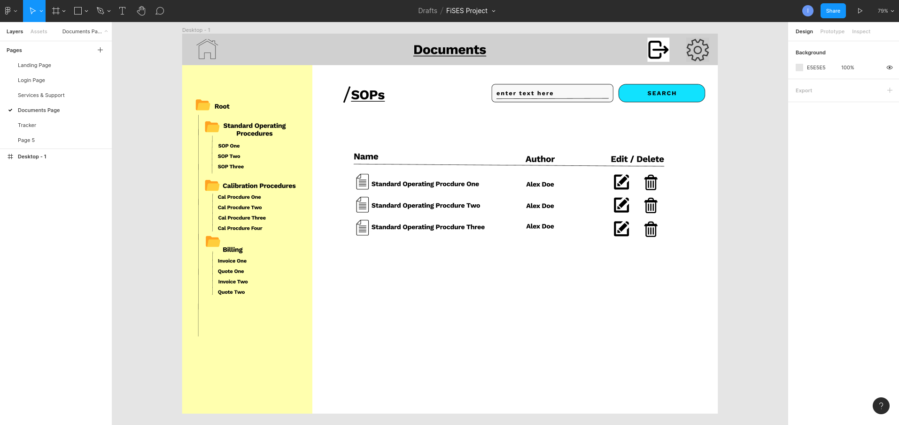
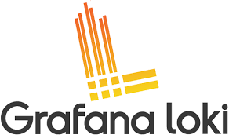

my name is
Ian Hutchinson
I am a budding developer who's journey started just over two 1/2 years ago at 29 years old. If you love creating things and have a passion for technology, remember if I can do it, you can too! 😀.
Overview
This is the landing page which contains the source material which supports my final year project submission. The project is called Field Service Engineering Solutions (FiSES).
In the project report, I outline the need for the project and issues with current systems. Due to a timeframe constraints, a section of the overall solution was worked on to prove the concept and demonstrate web development skills. The aim was to put together resources required by Service Engineers into a single custom web-based application.
The final application has a decoupled front end in Svelte and a back end in Go with a PostreSQL database. The entire project was built using free open-source software.

The backend application is built Go programming language. It follows the principals of REST architecture using HTTP protocol to expose the back-end services. It handles the incoming requests from the client application. Data is persisted using a PostgreSQL database.
Svelte Client Application

Svelte consumes and renders data from the Go API. The data is rendered via components and pages. Navigation is handled using a the svelte spa router. Keycloak IAM tool is integrated into the application which enables the ability to restrict content based on user roles. Content rendered to the end user will depend on their role.

Jira Atlassian is used to manage project tasks in an agile manner. Every requirement is not known up front so work can be created and prioritised as the project progresses. The project roadmap, tasks, and features are tracked and managed in fixed sprints of two week intervals. Feel free to check it out.

Wire framing provides an opportunity to explore UI components and pages in isolation. The wire frames were initially hand drawn on paper before moving to Figma to refine.
Logging Research
Grafana Loki

As part of my research into logging methods and visualisation of data, I created video demo. It involves setting up a namespace on a Kubernetes cluster deployed on minikube. Minikube is a lightweight Kubernetes implementation and is great for testing and development. A Grafana Loki instance is configured and run atop of minikube. There is also a document detailing the steps taken in the video demo, feel free to check it out.